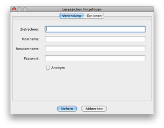
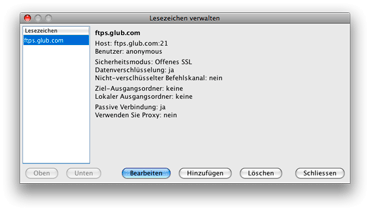

Lesezeichen
Wenn Sie eine Verbindung erstellt haben sollten Sie ein Lesezeichen von ihr anlegen, um sie schnell wieder aufrufen zu können.
Lesezeichen hinzufügen

Es gibt drei Möglichkeiten, Lesezeichen einer FTP-Verbindung anzulegen.
- Anlegen über den Dialog zum Verbindungsaufbau
- Anlegen mit dem Befehl "Lesezeichen anlegen" im Menu Lesezeichen
- Anlegen mit dem Befehl "Lesezeichen verwalten" im Menu Lesezeichen
Wenn Sie wissen, dass Sie ein Lesezeichen nach dem Einbuchen anlegen wollen, dann ist es das Einfachste, im Dialog Verbindungsaufbau die Option Lesezeichen anlegen zu wählen. Steht die Verbindung wird für diese Seite ein Lesezeichen angelegt. Standardmässig wird der Eintrag nach dem Zielrechner benannt. Sie können die Eigenschaften der Lesezeichen später im Dialog Lesezeichen verwalten bearbeiten.
Wenn Sie schon eingebucht haben oder Sie ein Lesezeichen anlegen wollen ohne sich einzubuchen können Sie das tun, indem Sie den Befehl Lesezeichen anlegen im Menu Lesezeichen wählen. So können Sie alle zugehörigen Informationen speichern.
Lesezeichen verwalten

Ist ein Lesezeichen einmal gespeichert haben Sie die Möglichkeit, die gespeicherten Informationen im Dialog Lesezeichen verwalten zu bearbeiten. Sie erreichen diesen Dialog über den Befehl Lesezeichen verwalten im Menu Lesezeichen. Hier haben Sie die Möglichkeit, die Reihung der Lesezeichen im Menu zu verändern, Eigenschaften der Lesezeichen zu bearbeiten, neue Lesezeichen anzulegen oder Bestehende vollständig zu löschen.
Absolute Lesezeichen
Es gibt eine Art von Lesezeichen, die Sie verwenden, aber nicht bearbeiten können. Diese absoluten Lesezeichen unterscheiden sich nicht von Ihren lokalen Lesezeichen, werden aber über eine HTTP-URL bezogen, die in den Einstellungen eingetragen wird. Die URL muss auf eine intakte XML-Lesezeichen-Datei von Secure FTP 2.5 zeigen.